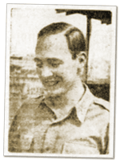

|
j
a v a s c r i p t |
January 21, 1942

Lt. David M. Kirk
(La Vanguardia) The papers say schools and banks will reopen soon but not when. A picture of one First Lt. David M. Kirk accompanies a letter from him to his comrades urging surrender. The letter was long, carefully crafted, and too pro-Japanese to be anything but fabricated propaganda. MacArthur’s agents are still active in the country, evidence of which are press reports of a couple of huge fires last week in Cabanatuan and Santa Maria, Bulacan. Unreported though, is a recent Quezon City blaze that destroyed a building housing a machine shop and aircraft parts. Saw a group of twenty soldiers training with ten radios. They carried the sets in front, with aerials (resembling fishing rods) projecting forward the way a flag carried by a marching soldier would. For a while we thought they were going fishing. |
|
|
|
|